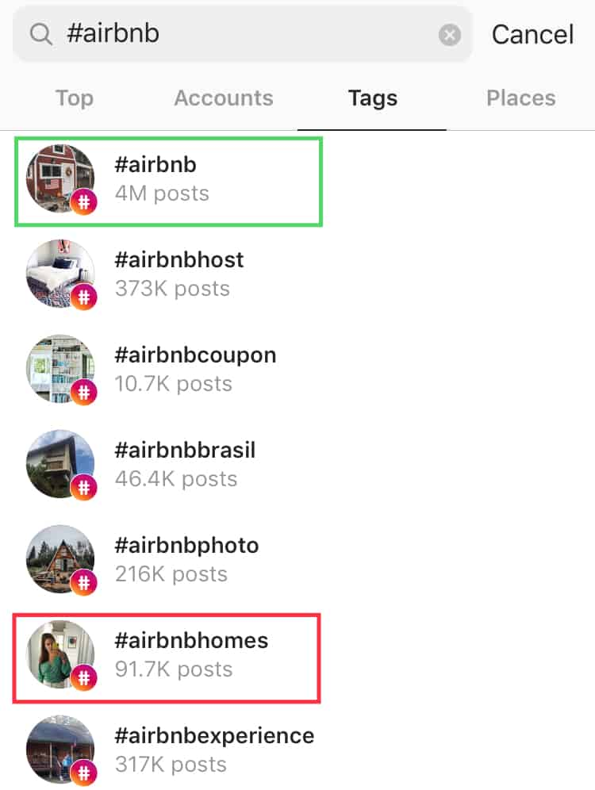
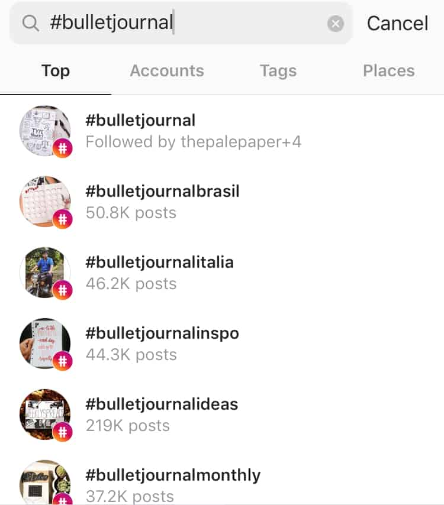
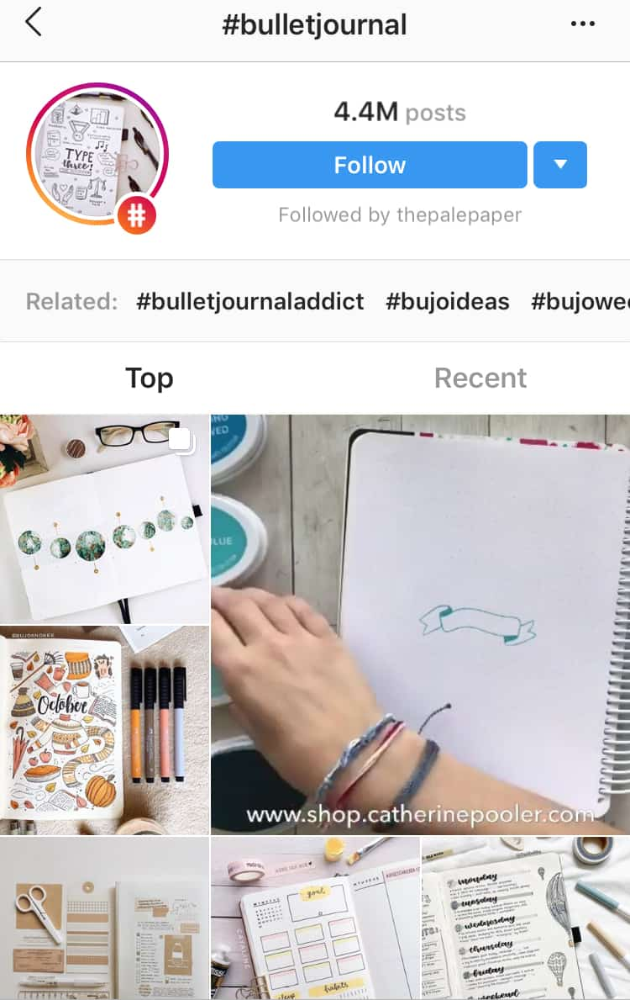
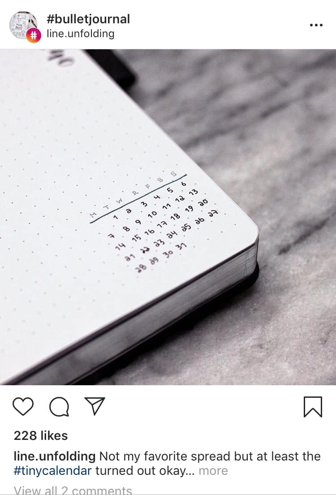
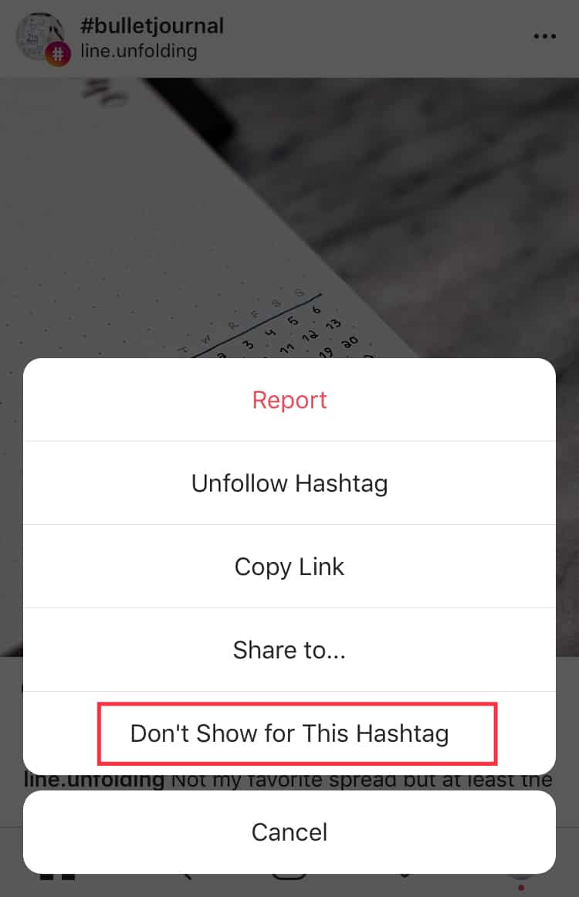
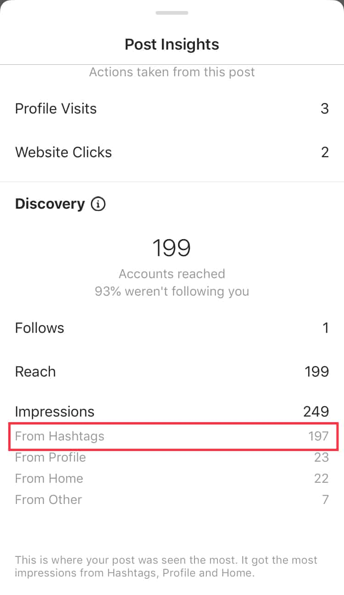
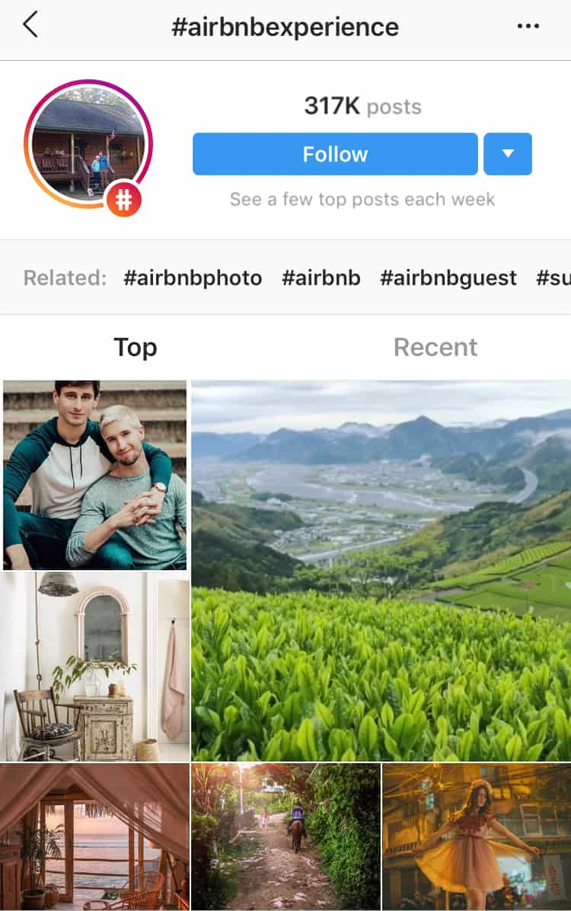
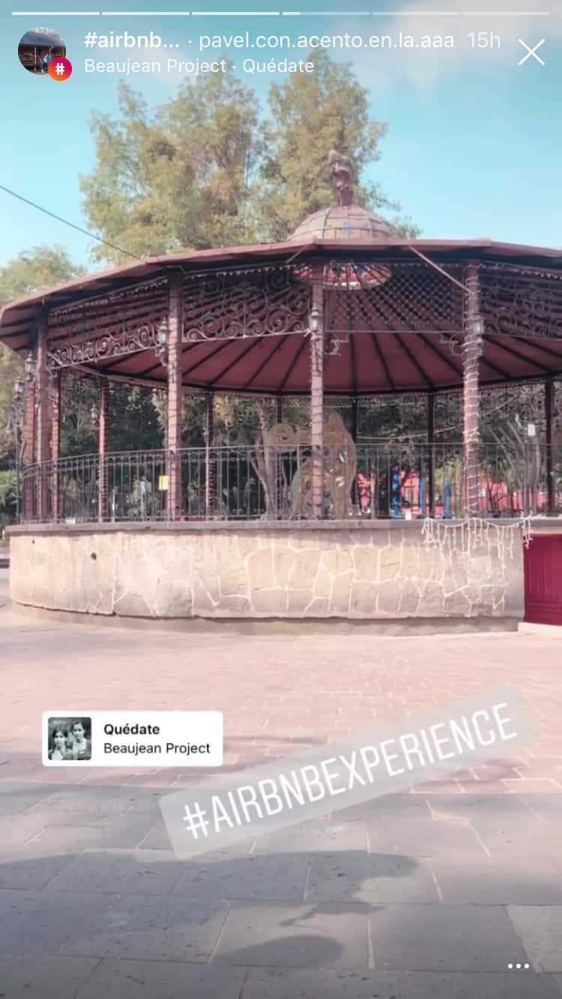

The rules for Instagram tags may have changed but it’s still an effective strategy to boost engagement. Don’t let Instagram shadowban scare you. Hashtags are still one of your best tools for promoting content.
In fact, 12.6% more engagement is observed in Instagram posts with at least one hashtag. And with tough competition, you need all the engagement you can get.
Credit: frankgreen_official via Instagram
Ready to use Instagram hashtags for your marketing strategy?
This cheat sheet will help you learn more about Instagram tags. Plus, we’ll keep you up to date with Instagram’s new hashtag rules for better engagement.
Why Are Instagram Tags Important Anyway?
Instagram continues to evolve. From being a simple photo-sharing app, it has grown into a marketing channel for brands and influencers alike. With this growth came changes and additional features.
But one thing remained constant: the importance of a good Instagram tags strategy.
Using the right set of Instagram hashtags will get more eyes on your content. This can lead to higher engagements and more followers.
For one, Instagram tags make content easy to find.
Hashtags make content discoverable. Think of it as keywords for a search engine.
- Users search tags through the explore page
- Or they can tap a tag to see more similar content
Failing to take advantage of this feature makes it hard for potential followers to find you. Most importantly it lowers your engagement opportunities.
Secondly, Instagram tags boost engagement
Notice how businesses have their own branded hashtags. Then they use these tags to encourage interactions with their audience.
Take this example from @hydroflask. They promoted their #HeyLetsGo tag in their bio.
Credit: @hydroflask via Instagram
Followers who used the tag have a chance of getting featured!
Credit: @hannaserdynski via @hydroflask on Instagram
When you click the tag, you’ll find that more and more customers are taking a photo of their Hydro Flask and using the tag. This creates organic brand advocates.
Thirdly, Instagram tags help you keep tabs on what’s trending
Part of every marketing strategy is knowing what’s hot and what’s not. Instagram hashtags make it so much easier to know what’s trending.
Your best sources are your competition and target audience. Additionally, you can also follow Instagram tags. In doing so, you can keep tabs on your competitors.
Want to develop an effective Instagram tags strategy? But before that, you need to understand that Instagram hashtags are not created equal. They come in different forms.
Three Main Types Of Instagram Tags
Branded Hashtags
This type of tag is unique to your business. These hashtags can contain your brand name, product, or tag line.
There are also instances where a branded tag has nothing to do with the brand name. However, it embodies the brand’s identity.
Take for example @kravebeauty. They created the branded hashtag #PressReset since they aim to uncomplicate the beauty industry.
Credit: @kravebeauty via Instagram
Tip: Make your branded hashtag memorable and catchy. This will encourage more users to share it.
Another example is from @reebok. They used the hashtag #SportTheUnexpected to drive awareness towards their latest commercial. Additionally, with this tag, their audience can share relevant content.
Credit: @reebok via Instagram
It’s important to encourage followers to use your branded hashtag. This makes your content discoverable on Instagram by bumping your post higher on the feed. Plus, it increases your chance of being on the Top Posts.
Campaign Hashtags
These Instagram tags are similar to branded hashtags. The main difference is that campaign tags are usually used for the short term.
Why? Because these tags are used for specific campaigns. For instance, a product launch. For this reason, they’re also perfect for use in Stories or Instagram Live.
Businesses heavily promote campaign hashtags to get people to notice it. Once the campaign is over, they stop promoting it.
Credit: @everlane via Instagram
Community Hashtags
Branded and campaign hashtags are associated with businesses. Community hashtags, on the other hand, are created to connect users with similar interests.
These Instagram tags are usually broader. For example, #bookstagram is created for users who love to post about their love for books.
You can use community tags in your content. In doing so, you’ll connect with like-minded users which helps in growing your account.
Tip: To find community tags, take a look at what tags your audience or competition is using.
If you want to make your own community tag:
- Make sure that it’s relevant to your industry
- Find a niche or topic that interests you
Want to learn more about finding the right Instagram tags?
How To Find The Right Instagram Tags For Your Business
Research Your Audience
You carefully create your content for your audience. Therefore, make it easy for them to find your content.
Don’t add random hashtags. Instead, find out what hashtags your audience is engaging with. Look for the tags that fit your brand.
Tip: If you want a more targeted engagement, consider using hashtags with a lower number of posts. It sounds contradicting, right? However, a lower number of posts means your audience will have a higher chance of seeing your content.
For example, you’re posting a photo of your Airbnb listing. Instead of simply adding #airbnb with nearly 4M posts, you can use the tag #airbnbhomes with only 91.7K posts.

Remember, avoid using overused Instagram tags. Your content will get lost in the millions of content. The more targeted your hashtag, the higher the chances of boosting engagement.
Take A Few Pointers From Other Brands And Influencers
It’s important to be unique and create your own strategies. However, it’s also smart to take a look at what your competitors are up to. This is true for finding what Instagram hashtags to use.
In doing so, you’ll know the latest trend. Additionally, you’ll have an idea of what your potential customers are talking about. Lastly, you’ll also discover new hashtags to add to your content.
Another tip is to follow Instagram influencers – especially those whom your audience is following. Remember, every industry has key influencers. These people already have a good following, so learn from the best!
Look For Related Instagram Hashtags
If you’re using the explore feature to search for tags, It’ll provide you with the top tags that are related to your search. Additionally, you’ll see the number of posts with that tag.
For example, if you search for #skincare, you’ll see other popular Instagram tags below.
Here’s what you can do: Click on any of the tags and tap one of the posts. You’ll find other relevant hashtags in the user’s hashtag section.
For example, clicking #skincareroutine brings up this post which also has other relevant tags.

Instagram tags are a powerful tool for reaching your audience. But when done incorrectly, they’ll look spammy.
Take Advantage of Trending Topics
This is another smart strategy for finding Instagram tags for your business. Here’s how you can use this tactic:
- Add trending hashtags. It doesn’t matter whether it’s directly related to your brand or industry.
- Use hashtags that are already trending in your industry.
For the first approach, you’d want to stick to holidays and special events.
Take this example from @kleankanteen where they used #PlasticFreeJuly. In doing so, they not only promoted their product but also raised awareness for the campaign.
Credit: @kleancanteen via Instagram
The second approach offers more targeted results. But depending on what industry you’re in, trending topics might be rare.
With all the changes and updates on the platform, keeping your IG tags relevant has become crucial.
So What’s New For Instagram Tags?
Users Can Now Follow Their Favorite Instagram Hashtags
By simply following a tag, relevant content will appear in users’ feed. Therefore, your content will potentially appear in other’s feed – even if they don’t follow your account!
How does it work?
Search for a tag on the explore page.

To follow a tag, simply tap the “Follow” button.

Once a user starts following a specific hashtag, suggested posts will appear in their feed.

This increases potential new followers.
But there’s a catch! The need to use a specific and relevant hashtag is more important than ever.
Why?
Because users can also mark your content as irrelevant. Users have the “Don’t Show for This Hashtag” option.

This was meant for Instagram to further curate the suggested content. However, if your posts keep getting marked as irrelevant, it’ll negatively affect your account.
Don’ts:
- Copying and pasting exactly the same set of Instagram tags in all of your posts.
- Use irrelevant hashtags.
- Stuff your post with hashtags. Instagram allows you to include 30 tags. But just because you can doesn’t mean you should.
Do’s:
- Switch up your tags in every post to avoid being tagged as “spam”. Additionally, there’s a chance that your audience already saw your post and ignored it. By switching up the tags, you’ll increase the chance of reaching new audiences.
- Be intentional in using hashtags. Think of your target audience and what they’re searching for.
- Use hashtags that are relevant to your content. In doing so, you avoid misleading potential followers.
Business Profiles Can Track Hashtag Effectiveness with Insights
Instagram Insights offer plenty of features for business profiles. In addition to tracking account growth, reach, and engagement, you can also analyze the success of individual posts. This includes tracking how many impressions your tags received.
Here’s how to access this information:
Choose a post and tap View Insights at the bottom left.
Credit: @pink_and_grey_condo via Instagram
Swipe up to see the full Insight analytics for that post. This includes reach and impressions from hashtags.

By checking this metric, you can determine which tags are highly effective in reaching your audience.
Take this post as an example. The hashtag set includes popular tags. You might think that because these are popular tags, it’ll reach more people and get high impressions.
Let’s look at its Insight analytics. It got really low impressions from the set of hashtags used. That’s why it’s crucial to analyze and evaluate what tags work the best.
Tip: Create a list of hashtags that work for your posts. Then select a combination of Instagram tags to describe your content. Lastly, monitor the success of your tags.
Users Can Add Instagram Hashtags To Stories
Adding hashtags to your Stories can boost your post’s discoverability. Remember, even non-followers can see your Stories. Therefore, your content will be seen by new audiences.
For example, an Instagram user searches for a tag.
They’ll see the Instagram Story icon at the top left corner. From here, they can view active, real-time Stories if it’s popular enough.

If your post is featured in a hashtag Story, it’ll expose your brand to a much larger audience. If they like it, they’ll visit and follow your account!

There are two ways to add Instagram tags to a Story:
1. The first method is to use the Hashtag Sticker. Simply tap the sticker icon and choose #Hashtag. Then type the tag you want to use.

2. Next method is using the text tool. Then add the # symbol before typing out the tag you want.
You can add up to 10 Instagram tags to a Story. However, avoid stuffing your content with keywords.
Tip: To hide hashtags in a Story, you can minimize the sticker or text. Another option is to hide them behind a sticker, GIF, or emoji.
Add Instagram Hashtags On Your Bio
Make the most out of your Instagram bio. On top of adding your websites and business information, you can now add your branded hashtags as well!
Credit: @schonmagazine via Instagram
In fact, you can add tags for:
- Promoting your Instagram community
- Highlighting your newly launched campaign
- Announcing contests and giveaways
In doing so, your audience will know what to use and where to go to find more content. Simply add the # symbol before any word. It will then become a clickable link that directs your audience to that hashtag.
To take this hashtag strategy even further, make sure to promote your tags across platforms. Promote it on-site and via newsletter.
In Conclusion
Despite the many changes on the platform, strategically using Instagram tags is still one of the best ways to reach your audience.
For this reason, you need to know which tags to use. Secondly, you need to have a good implementation strategy. Lastly, track your efforts. In doing so, you’ll know what’s working and what’s not.
Use the tips we’ve listed here to gain traction. Take advantage of the new updates and rules to create a more effective Instagram tags strategy.